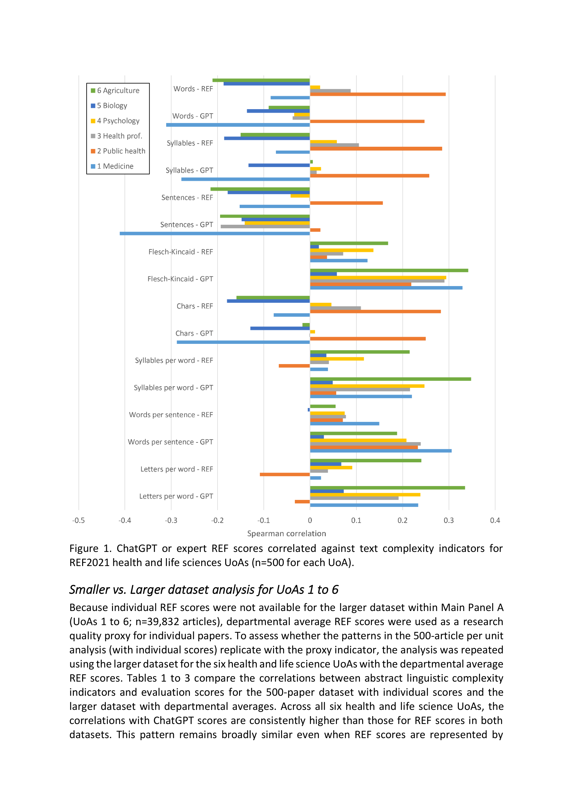
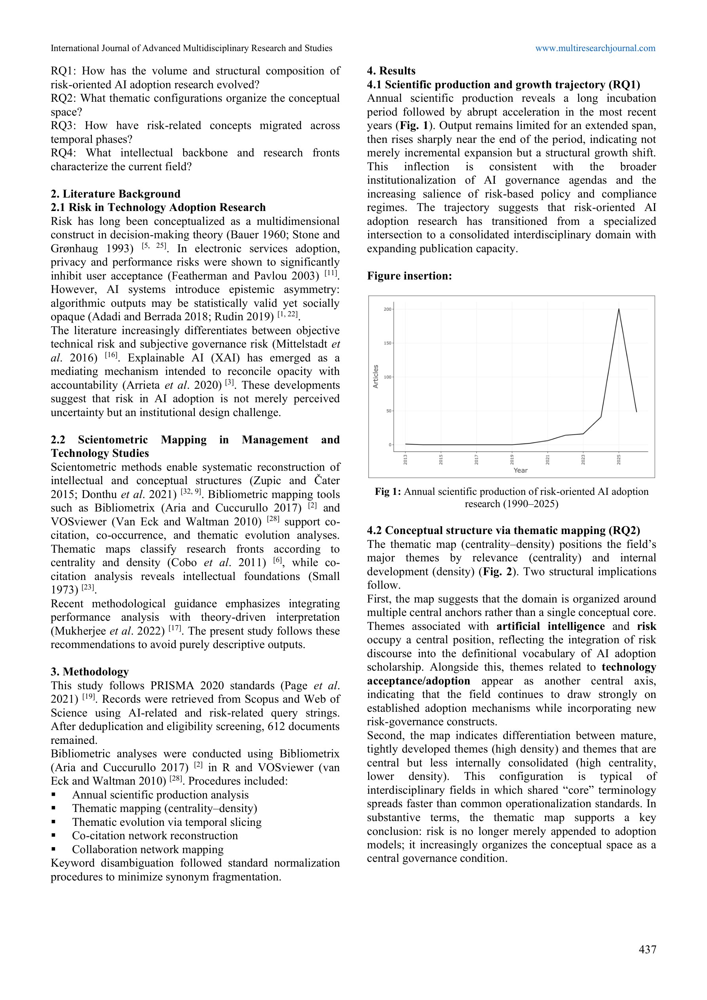
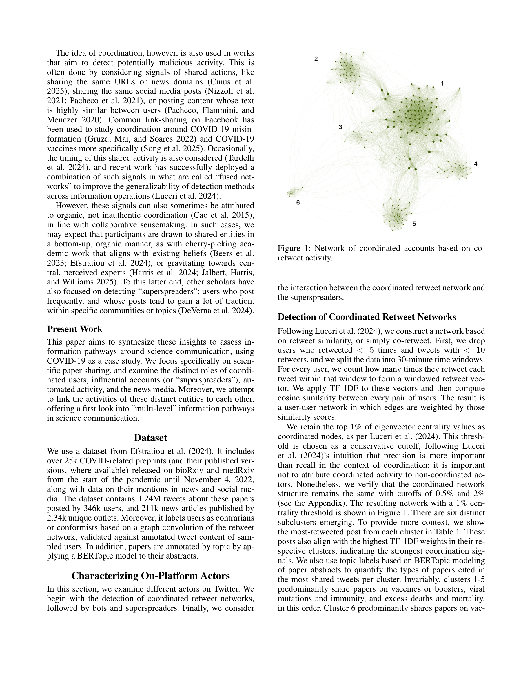
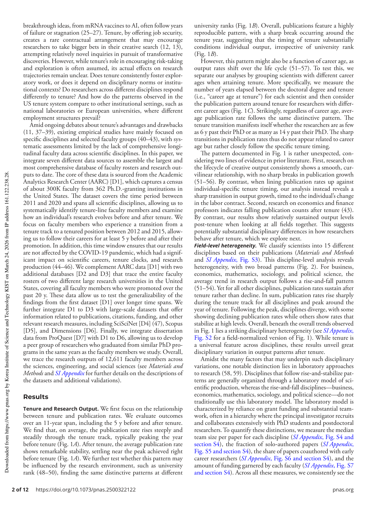

Science of Science — Paper Curation
Zotero "Science of Science" 컬렉션 | 2026년 출판 논문
Scientific production in the era of Large Language Models

본 연구는 Large Language Models(LLMs)이 과학 연구 생산에 미치는 거시적 영향을 210만 편의 preprint, 2.8만 건의 peer review 보고서, 2.46억 건의 온라인 접속 데이터를 활용하여 분석한다. LLM 도입이 연구자의 생산성을 23.7~89.3% 증가시키고, 언어적 복잡성과 논문 품질 간의 기존 양의 상관관계를 역전시키며, 연구자들이 더 다양한 선행 문헌을 접하도록 유도한다는 세 가지 핵심 발견을 제시한다.
Science지에 게재된 본 연구는 LLM이 과학 생산 생태계를 근본적으로 재편하고 있음을 대규모 실증 데이터로 설득력 있게 보여주며, 과학 평가 체계의 재설계 필요성을 강력히 제기하는 landmark 연구이다.
Public Profile Matters: A Scalable Integrated Approach to Recommend Citations in the Wild

본 연구는 local citation recommendation(LCR) 시스템의 성능을 개선하기 위해 Profiler라는 경량 비학습(non-learnable) 모듈과 DAVINCI라는 새로운 reranking 모델을 제안한다. 기존 시스템의 confirmation bias 문제와 높은 계산 비용을 해결하면서, 실제 환경을 반영한 inductive evaluation setting을 도입하여 state-of-the-art 성능을 달성하였다.
Citation recommendation의 실용적 한계를 잘 파악하고, bias-free retrieval과 현실적 evaluation이라는 두 가지 중요한 문제를 동시에 해결한 체계적인 연구이다.
Which stylistic features fool ChatGPT research evaluations?

본 연구는 ChatGPT의 연구 품질 평가에서 초록의 가독성, 언어적 복잡성, 길이 등 연구 품질과 무관한 문체적 특징이 점수에 영향을 미치는지 분석한다. UK REF 2021에 제출된 99,277편의 학술 논문을 대상으로 분석한 결과, ChatGPT가 인간 전문가보다 언어적 복잡성에 더 강하게 반응하며, 긴 초록과 난해한 문체에 편향될 가능성이 있음을 밝혔다.
LLM 기반 연구 평가의 실용적 적용에 앞서 반드시 고려해야 할 문체적 편향 문제를 대규모 실증 데이터로 명확히 제시한 시의적절한 연구이다.
Polymer Science Research in India: A Scientometrics Study
본 연구는 Web of Science 데이터베이스를 활용하여 2000-2019년 동안 인도의 고분자 과학(Polymer Science) 분야 연구 생산성을 계량서지학적으로 분석한다. 인도는 해당 기간 총 25,044편의 논문을 발표하였으며, 중국, 미국에 이어 세계 3-4위권의 연구 생산국임을 확인하였다.
인도 고분자 과학의 기본적인 출판 통계를 제공하지만, 분석의 깊이와 방법론적 엄밀성이 부족하여 scientometrics 분야에 대한 기여가 제한적인 기술적(descriptive) 연구이다.
Risk and Artificial Intelligence Adoption: A Scientometric and Thematic Evolution Analysis Based on Scopus and Web of Science (1990-2025)

본 연구는 1990-2025년 동안 Scopus와 Web of Science에 색인된 612편의 문헌을 대상으로 AI 도입과 리스크의 교차 영역에 대한 PRISMA 기반 계량서지학적 분석을 수행한다. 성과 분석, 주제 매핑, 주제 진화(Sankey diagram), co-citation 네트워크 분석을 통해 해당 분야의 지적, 개념적, 사회적 구조를 재구성하였다.
리스크-AI 도입 교차 영역의 지적 구조를 체계적으로 매핑한 유용한 종합 분석이나, 표준적 bibliometric 기법 적용에 그치며 해당 분야에 대한 깊이 있는 이론적 통찰이 다소 부족하다.
Real-World Evidence in the First Round of the US Inflation Reduction Act Drug Price Negotiations: A Citation Analysis of CMS Maximum Fair Price Explanation Documents
본 연구는 미국 인플레이션 감축법(IRA)에 따른 최초의 Medicare 약가 협상에서 CMS가 공개한 Maximum Fair Price(MFP) 설명 문서 10건의 인용을 분석하여, Real-World Evidence(RWE)의 활용 현황을 최초로 정량적으로 파악한다. 전체 인용 중 27.6%가 RWE로 분류되었으나, 약물별로 상당한 편차(13.8~41.5%)가 존재하였다.
IRA 약가 협상이라는 새로운 정책 맥락에서 RWE 활용의 현주소를 간결하게 파악한 시의적절한 연구이나, citation analysis에 그치며 심층적 방법론적 기여는 제한적이다.
Organisational accounts engaged in scholarly communication on Twitter: Patterns of presence, activity and engagement

본 연구는 GRID, ROR, Overton 등 세 개의 글로벌 조직 데이터베이스와 Altmetric, Crossref Event Data의 Twitter 데이터를 연계하여 학술 커뮤니케이션에 참여하는 9,842개의 연구 및 정책 관련 조직 계정을 식별하고, 이들의 소셜 미디어 자본, 트윗 활동, 참여 수준을 분석한다. 조직 계정은 개인 사용자 대비 높은 가시성을 보이지만, 대화적 참여(인용, 답글)는 상대적으로 약하다는 것을 발견하였다.
학술 커뮤니케이션의 제도적 차원을 조명하는 데이터 기반 연구로, 공개 데이터셋 구축과 체계적 방법론이 분야에 가치 있는 인프라를 제공한다.
Modeling Changing Scientific Concepts with Complex Networks: A Case Study on the Chemical Revolution

본 연구는 LLM의 context embedding이 가진 해석 불가능성과 시간 비인식 문제를 극복하기 위해, 토픽 기반 복잡 네트워크(complex networks)를 통해 과학적 개념의 변화를 모델링하는 프레임워크를 개발한다. Royal Society Corpus를 활용하여 화학 혁명 시기의 phlogiston(플로지스톤)과 oxygen(산소) 이론 경쟁을 사례 연구로 분석하며, 명명적(onomasiological) 변화가 높은 엔트로피와 위상적 밀도와 연관됨을 보인다.
과학적 개념 변화를 해석 가능한 네트워크로 모델링하는 흥미로운 학제간 연구로, 방법론적 아이디어는 참신하지만 단일 사례 연구의 한계로 프레임워크의 일반적 적용 가능성에 대한 추가 검증이 필요하다.
Interdisciplinary papers supported by disciplinary grants garner deep and broad scientific impact

본 연구는 26개국 164개 펀딩 기관의 35만 건 연구비와 이로부터 산출된 130만 편의 논문(1985-2009)을 분석하여, 학제간 연구비가 학제간 논문을 의도대로 생산하지만, 오히려 분과 학문 연구비가 지원한 학제간 논문이 더 높은 과학적 영향력을 보인다는 반직관적 발견을 제시한다.
학제간 연구 펀딩 정책에 대한 통념을 대규모 실증 데이터로 뒤집는 매우 영향력 있는 연구로, 깊은 분과적 전문성이 학제간 혁신의 기반이 된다는 발견은 과학 정책 설계에 근본적 재고를 촉구한다.
An empirical analysis of open access citation advantages in library and information science

본 연구는 Web of Science에서 수집한 109,759편의 도서관정보학(LIS) 분야 학술 논문(2001-2024)을 대상으로 Open Access(OA)의 인용 우위(citation advantage)를 실증적으로 분석한다. 비OA 논문(평균 18.83회)이 OA 논문(평균 17.9회)보다 약간 더 많은 인용을 받았으며, OA 인용 우위는 시간이 지남에 따라 감소하고 OA 유형 및 학문 범위에 따라 조건적으로 나타남을 밝혔다.
LIS 분야 OA 인용 우위의 조건적 특성을 대규모 데이터로 체계적으로 분석한 유용한 연구이나, 교란 변수 통제의 한계로 인과적 해석에 주의가 필요하다.
Authorship, titles and open access as drivers of citation performance in orthopaedics: a scientometric analysis
본 연구는 Scopus에서 수집한 97,806편의 정형외과 논문(2010-2020)을 대상으로 저자 수, 제목 특성, 연구 설계, Open Access 여부가 인용 성과에 미치는 영향을 다중 선형 회귀 분석으로 평가한다. 더 많은 저자, OA 출판, 콜론 포함 제목이 인용을 높이고, 물음표 제목과 전체 대문자 제목은 인용을 낮추는 것으로 나타났다.
정형외과 논문의 인용 성과 예측 요인을 포괄적으로 탐색한 실용적 연구이나, 유사한 분석이 다른 분야에서 이미 다수 수행되었으며 방법론적 새로움은 제한적이다.
Bridging the gap between science and society: Mapping libraries' strategies for engaging in the research impact process through semantic analysis

본 연구는 UK Research Excellence Framework(REF)의 465개 도서관 관련 연구 영향력 사례를 LLM과 BERTopic 기반 시맨틱 분석으로 탐구하여, 도서관이 연구의 사회적 영향력 생성 과정에서 수행하는 다섯 가지 핵심 전략을 식별한다. 도서관의 기여는 인문학(76%)과 문화적 영향(67%)에 집중되어 있음을 밝혔다.
연구 영향력 생태계에서 간과된 도서관의 역할을 LLM과 토픽 모델링의 혁신적 결합으로 조명한 연구로, 주제의 참신성과 방법론적 접근이 돋보이나 영국 한정 데이터의 일반화 한계가 있다.
OpenAlex in focus: Metadata quality of publication type and language fields in an open peer review corpus

본 연구는 OpenAlex 데이터베이스의 메타데이터 품질을 출판물 유형(publication type)과 언어(language) 필드를 중심으로 평가한다. Open peer review 관련 6,640건의 레코드를 수동 검증한 결과, 43%(2,878건)에서 출판물 유형 불일치가, 3.3%(222건)에서 언어 불일치가 발견되었으며, 'Article'이 가장 빈번하게 오분류된 유형이었다.
OpenAlex 메타데이터의 실질적 품질 문제를 정량적으로 드러낸 실용적 연구로, 해당 데이터베이스를 활용하는 모든 연구자에게 중요한 경고와 지침을 제공한다.
Information Pathways in Online Science Communication: The Role of Platform Actors and News Media

본 연구는 COVID-19 관련 과학 논문의 온라인 확산 경로를 124만 건의 트윗과 21.1만 건의 뉴스 기사를 분석하여 탐구한다. Twitter의 다양한 행위자(일반 사용자, 봇, 수퍼스프레더, 조정된 계정)와 뉴스 미디어 간의 상호작용 및 정보 흐름 경로를 밝히며, 반합의(contrarian) 전문가를 체계적으로 증폭시키는 조정된 네트워크의 존재를 식별한다.
과학 커뮤니케이션 생태계의 복잡한 정보 흐름을 대규모 데이터와 다면적 방법론으로 통합 분석한 우수한 연구로, 조정된 증폭과 미디어-전문가 정렬 패턴의 발견이 특히 시의적절하다.
BibFusion: A Python package to integrate, deduplicate, and harmonize exported bibliographic records from Scopus and Web of Science for bibliometric analysis

본 연구는 Scopus와 Web of Science의 서지 레코드를 통합, 중복 제거, 정규화하여 분석 가능한 단일 코퍼스로 변환하는 Python 패키지 BibFusion을 제시한다. DOI 기반 중복 제거, OpenAlex를 통한 식별자 보강, ORCID/OpenAlexAuthorID 기반 저자 명확화, 인용 문자열 정제 등의 기능을 갖추며, 기업가적 마케팅 쿼리 시연에서 436건의 소스 레코드를 253개의 고유 저작물로 통합하였다.
Bibliometric 연구의 데이터 전처리 파이프라인이라는 실질적 문제를 체계적으로 해결하는 유용한 도구 논문으로, 재현 가능성과 감사 추적성에 대한 강조가 높이 평가된다.
Rethinking Thematic Evolution in Science Mapping: An Integrated Framework for Longitudinal Analysis

본 연구는 과학 매핑(science mapping)의 종단적 분석에서 주제 탐지(thematic detection)와 계보 재구성(lineage reconstruction) 사이의 구조적 불일치를 해결하는 통합 프레임워크를 제안한다. 가중 관계 네트워크 내에서 fuzzy document affiliation과 centrality 가중 lineage-strength 측정을 통해 주제 진화를 단순한 어휘 지속이 아닌 관계 구조의 재구성으로 모델링한다.
Science mapping의 종단적 분석에서 오랜 구조적 불일치를 이론적으로 정확히 진단하고, 수학적으로 엄밀한 통합 프레임워크를 제안한 방법론적으로 중요한 연구로, bibliometrix 통합을 통해 분야 전체에 즉각적 영향을 미칠 잠재력이 있다.
Tenure and research trajectories

본 연구는 미국 대학의 tenure(종신재직권) 제도가 과학자의 연구 생산성, 연구 영향력, 그리고 연구 방향에 미치는 영향을 대규모 데이터를 통해 체계적으로 분석하였다. 7개의 데이터 소스를 통합하여 15개 학문 분야에 걸친 12,000명 이상의 faculty를 추적한 결과, tenure 획득 시점이 연구 궤적의 뚜렷한 전환점임을 발견하였다. Tenure 이후 연구자들은 더 novel한 연구를 수행하지만, 고피인용 논문의 비율은 감소하는 패턴을 보였다.
7개 대규모 데이터를 통합한 탁월한 실증 연구로, tenure 제도와 연구 궤적 간의 관계에 대한 체계적이고 재현 가능한 증거를 제시한다. Science of science 분야에서 tenure 연구의 새로운 기준을 제시한 PNAS급 논문이다.
Are disruptive papers more likely to impact technology and society?

본 연구는 disruptive한 과학 논문이 기술 및 사회 영역에 미치는 영향을 약 4천만 편의 논문 데이터를 통해 분석하였다. 흥미롭게도, CD index가 높은 논문은 특허, 임상시험, 뉴스, 소셜미디어에서 인용될 확률이 오히려 낮은 반면, 저자들이 새롭게 제안한 "disruptive citation"(절대적 disruptive impact) 지표가 높은 논문은 기술 및 사회 영역에서 인용될 확률이 유의하게 높았다. 이 발견은 CD index에 내재된 체계적 bias를 드러내며 과학적 disruption 측정의 새로운 관점을 제시한다.
CD index의 체계적 bias를 대규모 데이터로 실증하고 disruptive citation이라는 보완적 지표를 제안한 의미 있는 연구이나, 문체가 다소 장황하며 disruptive citation과 총 citation 간의 conceptual distinction이 보다 명확히 논의될 필요가 있다.
Claude Code powered by Oh-My-ClaudeCode, SKILL by Jehyun LEE jehyun.lee@gmail.com